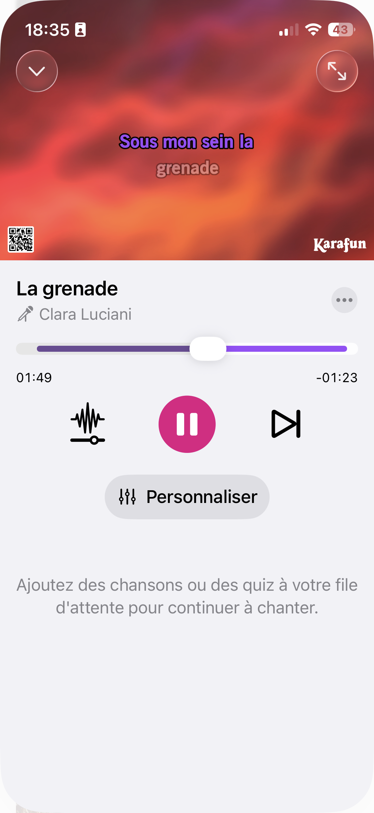

Leçon 5 · État dérivé et Combine
Le lecteur plein écran de la Leçon 4 a des contrôles, mais pas de paroles — la pièce maîtresse d'un lecteur karaoké. On simule une progression de lecture avec Combine, et on en dérive tout le reste : la ligne surlignée, le défilement automatique, le temps écoulé.
@State est grande.

En Leçon 4, le bouton posait player.currentSong et ouvrait le plein écran, mais oubliait de passer isPlaying à true — la chanson s'ouvrait donc en pause. Un oubli d'une ligne dans SongOptionsSheet :
Button("Jouer maintenant") {
player.currentSong = song
player.isPlaying = true // ← ligne manquante en Leçon 4
player.isExpanded = true
dismiss()
}Timer.publishToi qui viens de RxSwift, ceci va te sembler familier : Timer.publish(every:on:in:).autoconnect() est l'équivalent Combine (le framework réactif d'Apple, cousin direct de RxSwift) d'un Observable<Int>.interval(_:scheduler:). Un flux de valeurs, émis à intervalle régulier, auquel on s'abonne — sauf qu'ici l'abonnement se fait avec .onReceive, directement sur une vue SwiftUI, et se termine tout seul quand la vue disparaît (pas de dispose()/DisposeBag à gérer manuellement).
struct FullScreenPlayerView: View {
@Environment(PlayerState.self) private var player
@Environment(\.dismiss) private var dismiss
let song: Song
@State private var progress: TimeInterval = 0
private let timer = Timer.publish(every: 0.5, on: .main, in: .common).autoconnect()
var body: some View {
VStack(spacing: 24) {
// ... chevron, pochette, titre/artiste inchangés (Leçon 4)
LyricsView(lyrics: mockLyrics, currentTime: progress)
.frame(height: 160)
VStack(alignment: .leading, spacing: 8) {
Slider(value: $progress, in: 0...song.durationInSeconds)
HStack {
Text(formatTime(progress))
Spacer()
Text("-" + formatTime(song.durationInSeconds - progress))
}
.font(.caption)
.foregroundStyle(.secondary)
}
// ... contrôles de lecture inchangés (Leçon 4)
}
.padding()
.onReceive(timer) { _ in
guard player.isPlaying, progress < song.durationInSeconds else { return }
progress += 0.5
}
}
}En Leçon 4, le slider était figé (.constant(0.35)) faute de valeur réelle à lui donner. Maintenant progress est un vrai @State, alimenté par le timer et modifiable directement par l'utilisateur en faisant glisser le slider — les deux écritures convergent vers la même source de vérité, sans code supplémentaire.
extension Song {
var durationInSeconds: TimeInterval {
let parts = duration.split(separator: ":").compactMap { Double($0) }
guard parts.count == 2 else { return 0 }
return parts[0] * 60 + parts[1]
}
}
func formatTime(_ seconds: TimeInterval) -> String {
let total = Int(seconds)
return String(format: "%02d:%02d", total / 60, total % 60)
}durationInSeconds étend Song (Leçon 2) sans toucher à sa définition — le même réflexe qu'en Leçon 3 quand Playlist a gagné songs au fil des besoins.
Chaque ligne de paroles porte l'instant (en secondes) où elle doit apparaître — le texte lui-même est fictif, la mission portant sur l'UI et non sur de vraies paroles sous droits :
struct LyricLine: Identifiable, Hashable {
let id = UUID()
let time: TimeInterval
let text: String
}
let mockLyrics: [LyricLine] = [
LyricLine(time: 0, text: "Première ligne des paroles simulées"),
LyricLine(time: 4, text: "Chaque ligne a son propre horodatage"),
LyricLine(time: 8, text: "Le refrain arrive dans quelques secondes"),
LyricLine(time: 12, text: "On surligne la ligne courante en la comparant au temps"),
LyricLine(time: 16, text: "Et on fait défiler la vue jusqu'à elle"),
LyricLine(time: 20, text: "Sans jamais stocker \"quelle ligne est active\" à part"),
]Une seule constante mockLyrics, réutilisée quelle que soit la chanson jouée — associer de vraies paroles distinctes à chaque chanson du catalogue est un problème de contenu, pas d'UI, hors du périmètre de cette mission.
La tentation serait d'ajouter un @State private var currentLineIndex = 0, incrémenté à côté de progress. Mais c'est exactement le piège que la Leçon 4 t'a appris à éviter avec PlayerState : deux états à garder synchronisés, alors qu'un seul (progress) suffit à calculer l'autre :
struct LyricsView: View {
let lyrics: [LyricLine]
let currentTime: TimeInterval
private var currentLine: LyricLine? {
lyrics.last { $0.time <= currentTime }
}
var body: some View {
ScrollViewReader { proxy in
ScrollView {
VStack(alignment: .leading, spacing: 10) {
ForEach(lyrics) { line in
Text(line.text)
.font(line == currentLine ? .title3.bold() : .body)
.foregroundStyle(line == currentLine ? .primary : .secondary)
.id(line.id)
}
}
}
.onChange(of: currentLine) { _, newLine in
guard let newLine else { return }
withAnimation {
proxy.scrollTo(newLine.id, anchor: .center)
}
}
}
}
}currentLine est une propriété calculée, pas un @State : à chaque changement de currentTime, SwiftUI la recalcule et redessine le texte concerné — exactement le même principe que isSelected: mode == option dans ModeCard (Leçon 2), appliqué ici à une liste plutôt qu'à deux boutons.
ScrollViewReader — faire défiler par codeScrollViewReader expose un proxy dont scrollTo(_:anchor:) fait défiler jusqu'à la vue portant l'.id(_:) donné — le plus proche en UIKit serait scrollRectToVisible(_:animated:) ou scrollToRow(at:at:animated:) sur un UITableView, mais ici on cible n'importe quelle vue par une valeur Hashable, pas un IndexPath.
.onChange(of: currentLine) a besoin que LyricLine soit Equatable.onChange(of:) compare l'ancienne et la nouvelle valeur pour savoir s'il doit réagir — il lui faut donc Equatable. LyricLine est déjà Hashable (nécessaire pour .id(line.id) et pour comparer les Optional<LyricLine> dans ForEach), et Hashable implique Equatable — rien à ajouter.
| UIKit / RxSwift | SwiftUI / Combine |
|---|---|
Timer.scheduledTimer + invalidate() manuel | Timer.publish(every:on:in:).autoconnect() + .onReceive (arrêt automatique) |
Observable<Int>.interval(_:scheduler:) (RxSwift) | Timer.publish(every:on:in:) (Combine) |
UIScrollView.scrollRectToVisible(_:animated:) | ScrollViewReader + proxy.scrollTo(_:anchor:) |
Variable calculée à la volée dans cellForRowAt | Propriété calculée lue directement dans body (ex. currentLine) |
ScrollViewReader, Timer.TimerPublisher, onChange(of:initial:_:). Si Combine te semble flou au-delà de cet exemple, le chapitre Combine de "SwiftUI Tutorials" ou une recherche "Combine vs RxSwift" te fera gagner du temps en t'appuyant sur ce que tu connais déjà.
1. Pourquoi Timer.publish(...).autoconnect() plutôt qu'un Timer.scheduledTimer classique ici ?
2. Quelle méthode du proxy de ScrollViewReader déplace le défilement jusqu'à une vue précise ?
3. Pourquoi calculer currentLine plutôt que stocker un @State private var currentLineIndex séparé ?
4. Quel protocole doit satisfaire LyricLine pour être utilisée avec .onChange(of:) (déjà acquis via Hashable) ?
Le défilement saute au lieu de glisser, ou la ligne surlignée est en retard d'une ligne ? Vérifie d'abord que currentLine compare bien avec <= et que lyrics est trié par time croissant — .last { ... } suppose cet ordre. Demande à ton agent si besoin.